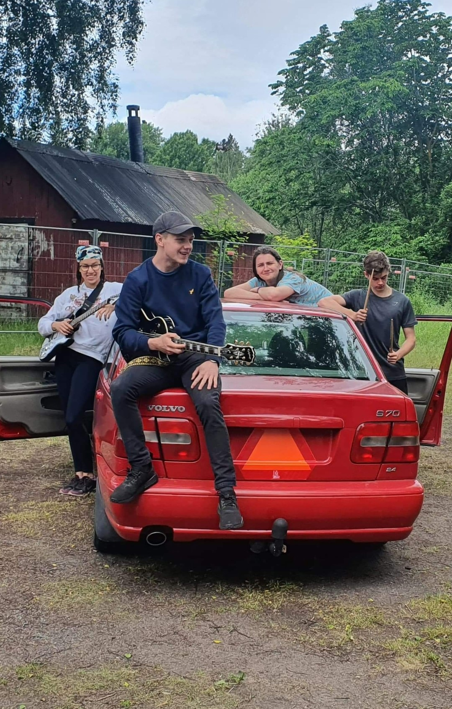

Jag har spelat gitarr sen jag var ca 8 år gammal, men intresset ökade starkt när jag började i sjuan och blev introducerad till rockmusik. Plötsligt fanns det cool musik som man kunde spela själv. Här är en bild på min strata som jag använder som andra gitarr.
Jag har gått på gitarrlektioner sen början men jag började ta det mer på allvar i sjuan, via dessa gitarrlektioner blev jag intagen i ett band med andra elever i musikskolan. Här är en bild på min första elgitarr som nu är såld.
Jag spelade live med skol-bandet några gånger och det gör jag fortfarande. Sommaren 2022 sökte jag sommarjobb via haninge kommun och blev då intagen i ett till band som jag spelade live med några gånger.